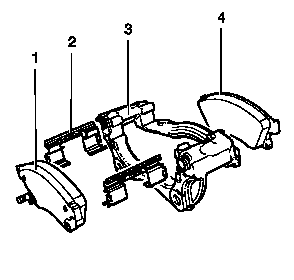
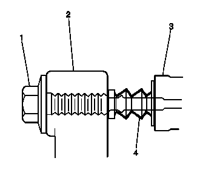

前盘式制动器的安装和构件的的检查
-

1.检查制动总泵储液罐中的液位。
- 2.如果制动液液位处于最满标记和最低允许液位之间的中间位置，则在开始本程序前不必排出制动液。
- 3.如果制动液液位高于最满标记和最低允许液位之间的中间位置，则在开始前应将制动液排出至中间位置。
- 4.举升和顶起车辆。参见举升和顶起车辆。
- 5.拆下轮胎和车轮总成。参见轮胎和车轮的拆卸和安装。
- 6.抓住制动钳壳体，并试着相对于制动钳安装托架上/下和前/后方向移动制动钳壳体(3)。如果观察到过于松动，则可能需要更换制动钳托架衬套和/或制动钳安装螺栓。
- 7.压缩前制动钳活塞。
- 7.1 将大型C形夹钳安装至制动钳壳体顶部，并抵住外侧制动片(1) 背部。
- 7.2 缓慢地紧固C形夹钳，直到将制动钳活塞完全压入制动钳孔内。
- 7.3 将C形夹钳从制动钳上拆下。
- 8.随着活塞压入制动钳孔内，抓住制动钳壳体并在制动钳安装螺栓上前后滑动。检查操作是否顺畅。如果制动钳壳体滑动力过大或制动钳壳体滑动不顺畅，检查制动钳安装螺栓和/或制动钳安装托架衬套是否磨损或损坏。如果发现磨损或损坏状况，有必要更换制动钳安装螺栓和/或制动钳安装托架衬套。
- 9.从制动钳安装托架上拆下制动钳安装螺栓，并用粗钢丝支撑住制动钳。切勿将液压制动软管从制动钳上拆下。参见前制动钳的更换。
- 10.将盘式制动片(1，4) 从制动钳安装托架(3) 上拆下。
- 11.检查盘式制动片安装构件是否存在以下状况：
- • 安装构件缺失。
- • 严重腐蚀。
- • 衬垫固定件弹簧(2) 弯曲。
- • 制动钳安装托架(3)松动。
- • 盘式制动片(1, 4) 松动。
- • 制动钳安装托架(3) 表面和螺纹污染物过多。
- 12.如果发现上述任何状况，则需更换盘式制动片的安装构件。
- 13.确保盘式制动片在制动钳安装托架上牢固固定到位，而且在安装构件上滑动顺畅，没有卡滞现象。
-

14.检查制动钳安装构件是否存在以下状况：
- • 卡滞
- • 卡死
- • 制动钳安装托架(3) 松动。
- • 制动钳安装螺栓(1) 弯曲或损坏。
- • 护套(4)开裂或破损。
- • 护套缺失。
- • 制动钳安装托架(3)弯曲或损坏。
- • 制动钳(2) 开裂或损坏。
- 15.如果发现上述任何状况，则需要更换制动钳安装构件。
- 16.将盘式制动片安装至制动钳安装托架。
- 17.将盘式制动器制动钳安装至制动钳安装托架。参见前制动钳的更换。